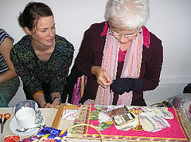

Sunday, October 16, 2005
Sock Darning

Debbie Flatt Darning
Originally uploaded by
notionnanny
.
Sarah Carrington's mother Debbie Flatt demonstrated how to darn socks using yarn. Sarah wore a jacket Debbie made in the 1970s out of WIlliam Morris fabric.
posted by Notion Nanny at
1:48 PM
0 Comments:
Post a Comment
<< Home
« Home
Previous Posts
Jill Stitching Today
Old Clothes to Mend
Group Effort
Knitting is Rad
Trade & Barter
Stitched Cakes
Tea Party Treats
Cozy Slogans
Flowers for a Cause
Tea Party
0 Comments:
Post a Comment
<< Home